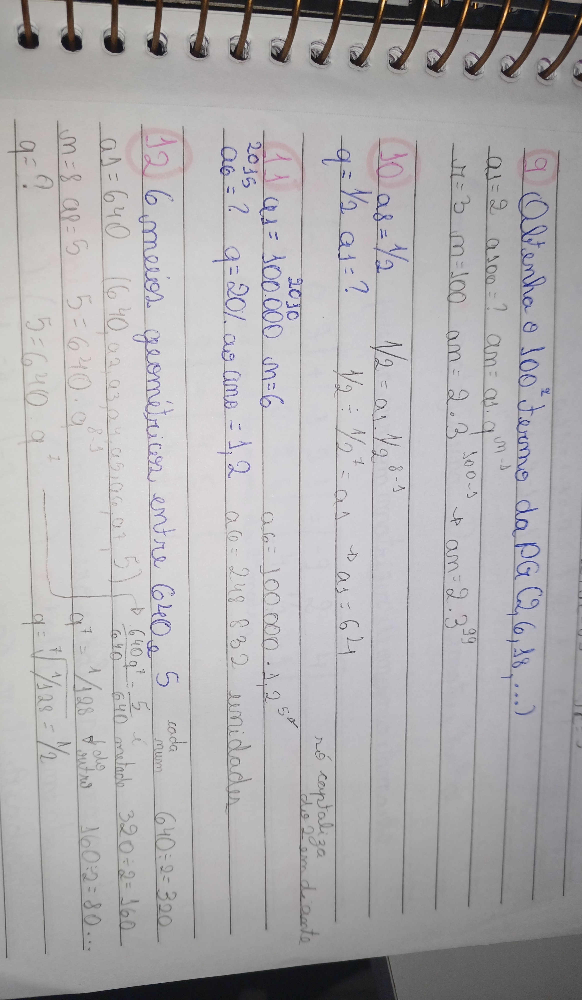

Progressão Geométrica
Progressão Geométrica (PG), assim como a Progressão Arimética é uma sequência numérica, porém na PG o termo é igual a multiplicação do termo anterior com um número fixo. Esse número fixo será a razão, que na PG será representada por q. Por exemplo, a sequência ( 2, 4, 8, 16, ...) é uma sequência geométrica em que a razão é 2,
já que q = a2 : a1 = 4 : 2 = 2, e assim acontece sucessivamente, o 4 multiplicado por 2 resulta em 8 e assim por diante.
q = a2 = a3
a1 a2
Uma progressão geométrica pode ser classificada de acordo com o comportamente da razão quanto a zero:
Fórmula do Termo Geral
Para descobrirmos o termo geral de uma PG, assim como na PA também utilizamos uma fórmula. Assim, também conseguiremos descobrir um certo termo de uma progressão geométrica, utilizando a seguinte fórmula:
an = a1 . qn - 1
EX.: Qual é o 7° termo da PG ( 2, 6, ...)
RESPOSTA: Sabemos que a1 = 2, q = 6 : 2 = 3, n = 7 e precisamos descobrir a7, então substituiremos os valores na fórmula do termo geral.
a7 = 2 . 37 - 1
a7 = 2 . 729
a7 = 1458
Também podemos descobrir termos da PG através da razão, como comentado na PA! Veja um exemplo:
EX.: Qual o valor de x de uma PG ( ( x + 1 ), ( x + 4 ), ( x + 10 ) )?
RESPOSTA: Primeiro sabemos que a1 = ( x + 1 ), a2 = ( x + 4 ) e a3 = ( x + 10 ). Também sabemos que q = a2/a1 = a3/a2, então basta utilizarmos essa razão substituindo os valores.
x + 4/x + 1 = x + 10/x + 4
( x + 4 ) ( x + 4 ) = ( x + 10 ) ( x + 1 )
x2 + 4x + 4x + 16 = x2 + x + 10x + 10
8x + 16 = 11x + 10
6 = 3x
x = 2
A Progressão Geométrica pode ser encontrada em diferentes vestibulares e no Enem, podendo ser em perguntas nas quais precisamos entender o contexto para poder realizar a questão, veja um exemplo de uma questão do Enem de 2020:
EX.:
RESPOSTA: A medida dos lados do quadrado formam uma PG, visto que, cada quadrado tem como lado a metade do outro, PG ( 1, 1/2, 1/4, ..., a100 ). Sabemos que a1 = 1, q = 1/2 e n = 100, então utilizaremos a fórmula do termo geral para descobrir o valor de a100.
a100 = 1 . ( 1/2 )100 - 1
a100 = ( 1/2 )99
Interpolação Geométrica
A interpolação geométrica é a inserção de termos em uma progressão geométrica. Assim como na PA, na PG temos os meios k que serão inseridos e os extremos a1 e an.
EX.: Interpole 8 meios entre 5 e 2560.
RESPOSTA: Sabemos que a1 = 5 e an2560. Como precisamos interpolar 8 termos e já temos 2, então n = 10 a10 = 2560. Precisamos descobrir o valor de q utilizando a fórmula do termo geral.
an = a1 . qn - 1
2560 = 5 . q9
q9 = 512
q9 = 29
q = 9√29
q = 2
k1 = 5 . 2 = 10
k2 = 10 . 2 = 20
k3 = 20 . 2 = 40
k4 = 40 . 2 = 80
k5 = 80 . 2 = 160
k6 = 160 . 2 = 320
k7 = 320 . 2 = 640
k8 = 640 . 2 = 1280
PG ( 5, 10, 20, 40, 80, 160, 320, 640, 1280, 2560 )
Soma dos Termos de uma PG finita
Assim como na Progressão Arimética, também podemos calcular a soma dos termos de uma Progressão Geométrica finita, para isso utilizamos a seguinte fórmula:
Sn = a1 . 1 - qn/1 - q
EX.: Precisamos calcular a soma dos 6 primeiros termos da PG ( 2, 4, 8, 16, ...).
RESPOSTA: Sabemos que a1 = 2, que n = 6 e que q = 4 : 2 = 2, então apenas precisamos substituir os valores na fórmula.
S6 = 2 . 1 - 26/1 - 2
S6 = 2 . -63/-1
S6 = 126
Soma dos Termos de uma PG infinita
Quando -1 < q < 1 podemos calcular a soma dos termos de uma PG infinita. Como nesse caso por conta da razão a progressão irá tender a zero, acabará que qn = 0. Então, na hora de utilizar a fórmula ficará Sn = a1 . 1 - 0/1 - q, fazendo com que a fórmula final seja:
S = a1/1 - q
EX.: A medida do lado de um triângulo equilátero é 10. Unindo-se os pontos médios de seus lados obtém-se os pontos médios dos lados desse novo triângulo equilátero. Unindo-se os pontos médios desse novo triângulo equilátero obtém-se um terceiro e assim por diante. Qual a soma dos perímetros de todos esses triângulos?
RESPOSTA: Primeiro precisamos entender o que está acontecendo com esse triângulo, veja ao lado. No enunciado é pedido o perimetro, então em nossa PG precisaremos colocar o perímetro no lugar dos lados, sendo assim, a1 = 10 . 3 = 30, a2 = (10 : 2) . 3 = 15, ..., de forma que PG ( 30; 15; 7,5; ... )
Então, além de sabermos que a1 = 30, também sabemos que q = 1/2, já que um será sempre a metade do outro. Portanto, basta substituirmos os valores na fórmula:
S = 30/1 - 1/2
S = 30 . 2/1
S = 60
Atividades
Abaixo deixarei as resoluções de atividades sobre PG que fizemos na aula:
Considerações
Sendo sincera, achei que havia entendido, mas chegou na hora da prova e percebi que não. Já havia tido problemas com a PG nos exercícios que fizemos em aula, mas pensei que tinha compreendido, porém na hora da prova houve o problema de ter confundido a PA com PG. Além disso, também achei mais difícil trabalhar com frações, mas como havia dito nas considerações da PA, foi porque ainda não tinha entendido muito a razão em si, agora creio que não tenho mais dúvidas.